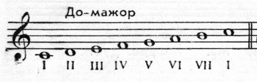
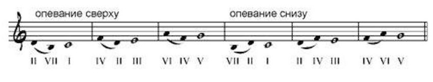

Урок 9. Ступени гаммы До-мажор. Опевание. Вводные звуки.
Теория
Гамма До-мажор состоит из семи ступеней: До, Ре, Ми, Фа, Соль, Ля, Си. Каждая нота в гамме называется ступенью и имеет свой номер: первая — До, вторая — Ре и так далее.
- Опевание — это мелодическое движение, когда неустойчивая ступень окружается устойчивыми (например, движение Соль — Ля — Соль или Ми — Фа — Ми).
- Вводные звуки — это седьмая ступень гаммы (Си в До-мажоре), которая стремится разрешиться в тонику (До).
В гамме До-мажор устойчивыми считаются ступени: До (I), Ми (III), Соль (V). Остальные — неустойчивые.
Опевание часто используется в мелодиях для создания плавности и выразительности.
Вводный звук (Си) почти всегда разрешается в тонику (До), особенно в конце музыкальной фразы.
Упражнения
- Распознавание ступени: Определите номер и тип ступени (устойчивая, неустойчивая, вводный звук) — До — первая ступень (устойчивая); Ми — третья ступень (устойчивая); Си — седьмая ступень (вводный звук); Фа — четвёртая ступень (неустойчивая).
- Пение: Пропойте опевание и разрешение вводного звука в гамме До-мажор (Соль, Ля, Соль, Ми, Фа, Ми, Си, До).
Аудио-примеры
Ступени гаммы До-мажор:
Опевание и вводный звук:
Визуальные примеры
Ступени гаммы До-мажор на нотном стане:

Опевание и вводный звук:
